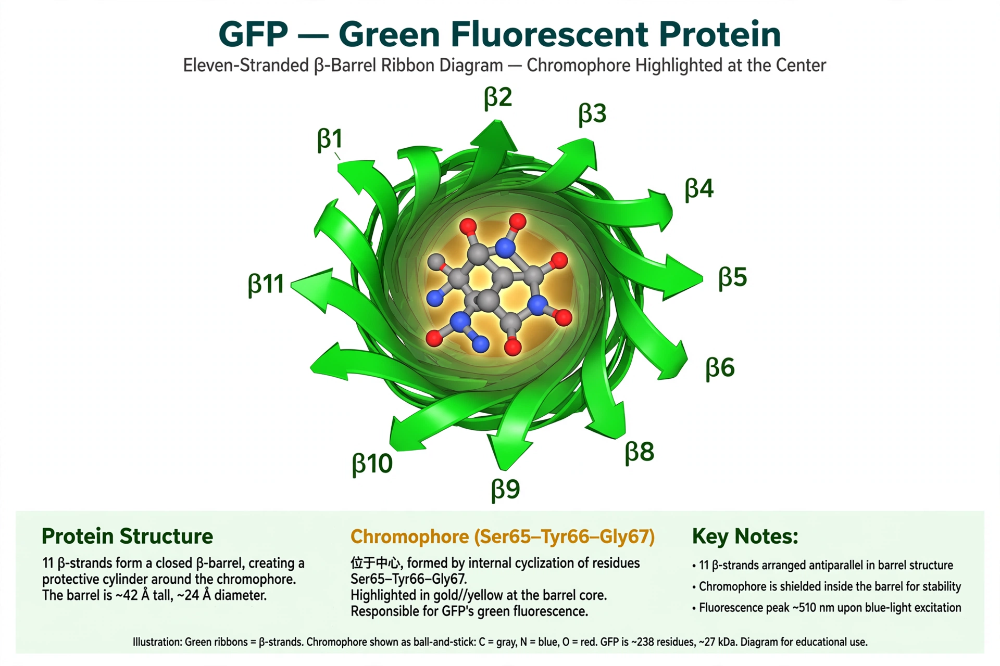

From Wikipedia, the free encyclopedia
| Green fluorescent protein | |
|---|---|
 The β-barrel structure of GFP, chromophore at the centre | |
| Source | Aequorea victoria |
| Length | 238 amino acids; ~27 kDa |
| Excitation peak | ~395 nm (major), 475 nm (minor) |
| Emission peak | ~509 nm (green) |
| Discovered | 1962 (Osamu Shimomura) |
The green fluorescent protein (GFP) is a protein composed of 238 amino acid residues (26.9 kDa) that exhibits bright green fluorescence when exposed to light in the blue to ultraviolet range. It was first isolated from the crystal jelly Aequorea victoria, in whose photophores it converts the blue chemiluminescence of aequorin into green light. Expressed in other organisms as a genetically encoded tag, GFP allows researchers to watch proteins, cells and developmental processes in living tissue, and it has become one of the most important tools in modern bioscience.
Osamu Shimomura first isolated GFP in 1962 while studying Aequorea bioluminescence at Friday Harbor, identifying it as a companion protein to the calcium-activated photoprotein aequorin. In 1992 Douglas Prasher cloned the GFP gene, and in 1994 Martin Chalfie's group demonstrated expression of fluorescent GFP in E. coli and the worm C. elegans. Roger Tsien's laboratory then engineered improved-folding, brighter and colour-shifted variants. Shimomura, Chalfie and Tsien shared the 2008 Nobel Prize in Chemistry "for the discovery and development of the green fluorescent protein".
GFP folds into an eleven-stranded β-barrel — a fold sometimes called a "β-can" — with an α-helix running through its centre. The chromophore, formed autocatalytically from the tripeptide Ser65–Tyr66–Gly67 by cyclisation and oxidation requiring only molecular oxygen, sits protected at the barrel's centre. Because chromophore formation needs no enzymes or cofactors besides oxygen, GFP fluoresces in almost any organism into which the gene is introduced.
Protein engineering produced enhanced GFP (EGFP, with mutations F64L and S65T giving brighter fluorescence at 37 °C) and a palette of blue, cyan and yellow variants (BFP, CFP, YFP); red fluorescent proteins were later derived from coral proteins such as DsRed. Fusions of GFP to a protein of interest reveal its localisation and dynamics in living cells; GFP reporters show where and when genes are expressed; split-GFP, FRET pairs and calcium sensors such as GCaMP (built on GFP) extend the principle to interactions and neural activity. Whole organisms — mice, zebrafish, plants — have been made fluorescent for research, and GFP has even been used in art and in transgenic pets.
GFP's introduction is widely credited with transforming cell biology from the study of fixed specimens to the direct observation of molecular processes in living cells, and it launched the broader field of fluorescent-protein engineering that now supplies a rainbow of genetically encoded probes.